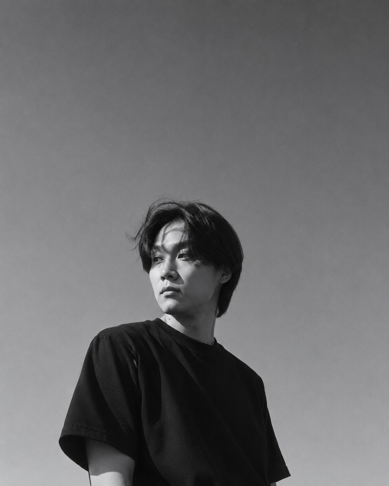

AI Engineer / Visual Artist / Novel Writer / Aesthetics Researcher
Brachio Island Studio is a one-person island staged as a working crew.
Studio Manifesto
Brachio Island Studio reframes one practice as a small crew. Engineering funds the island, art gives it weather, fiction gives it memory, and aesthetics keeps asking why the image matters.

Crew Roster
Roles
Builds generative image systems, model pipelines, and production tools.
Turns models, images, and interfaces into visual works and image experiments.
Writes fiction as an archive of speculative memory, belief, and damaged futures.
Studies how technology, faith, originality, and production reshape art.
Background
NC AI, Visual Content Service Division, Generative AI Research Engineer
NCSOFT, Image Generation Team, Generative AI Research Engineer
M.S. in Computer Graphics, Deep Image Recolorization using Histogram Analogy
AI Engineer
ROLE 01 / ENGINEERING LAB / IMAGE SYSTEMS
Diffusion-model-based image generation AI SaaS
Foundation model construction and related adapter development
Virtual try-on development using multi-GPU training for LoRA-based generative models
Multi-view generation features across data refinement, model training, and AI architecture design
Controllable image generation and conditional pipelines for high-resolution landscape synthesis
Visual Artist
ROLE 02 / IMAGE ROOM / VISUAL OUTPUTS
The visual artist pulls image works from markdown items with type: gallery.
Aesthetics Researcher
ROLE 04 / READING ROOM / ESSAY FILES
The aesthetics researcher gathers essays from markdown items with type: essay. PDF works open in the reader.
Essay 데이터를 불러오는 중입니다.
Research
ROLE 01 + 04 / PAPER CABINET / TECHNICAL RECORDS
Research files and papers remain available as PDF records from the studio archive.
Paper 데이터를 불러오는 중입니다.
Novel Writer
ROLE 03 / FICTION ARCHIVE / NOVEL WHEEL
The novel writer keeps fiction in markdown items with type: novel. Notion rendering remains as a secondary option.
Contact
Screen selector